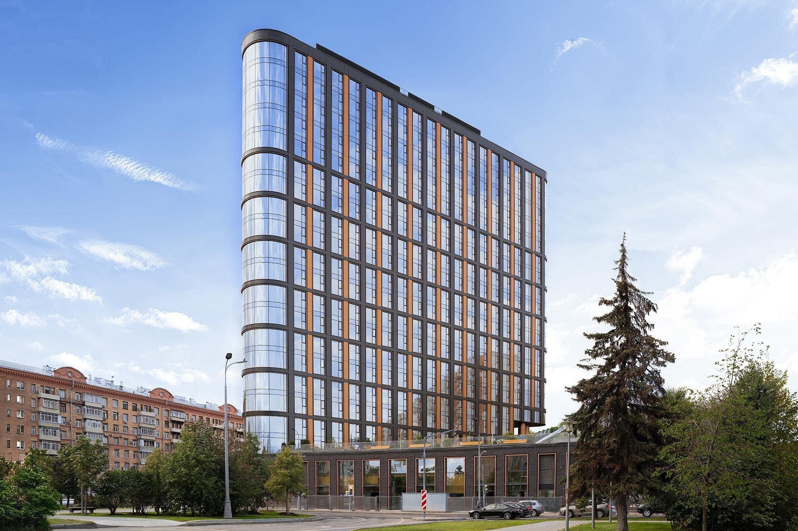
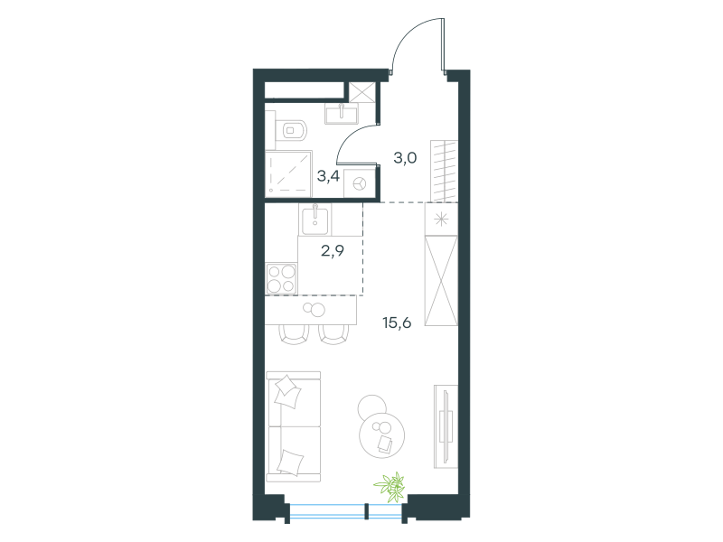
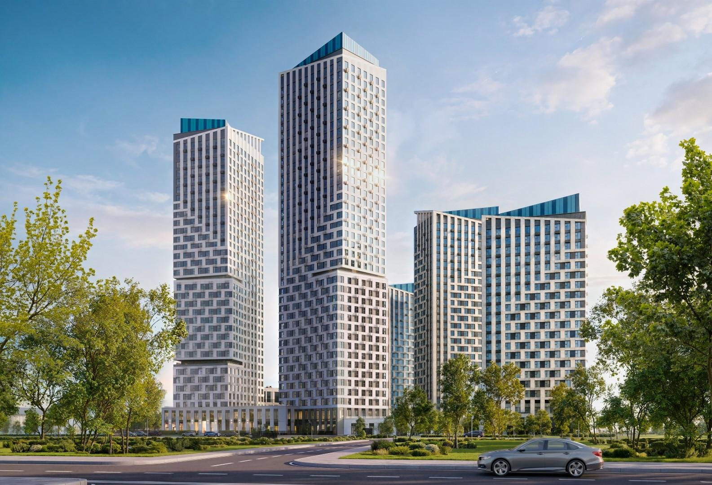
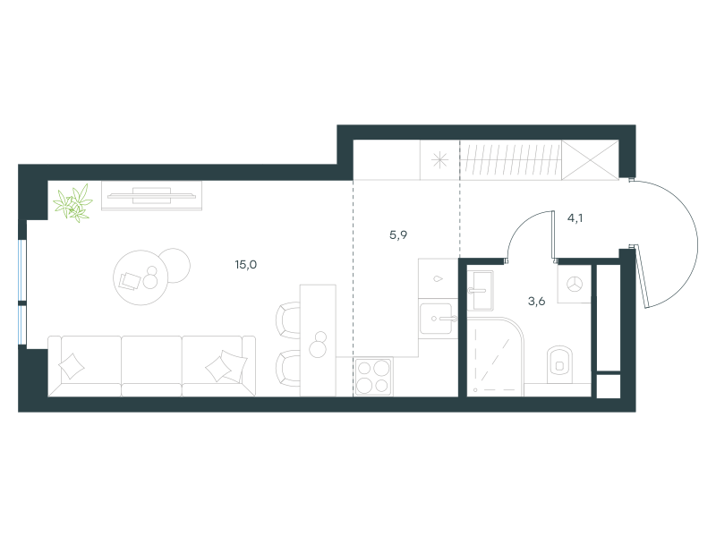
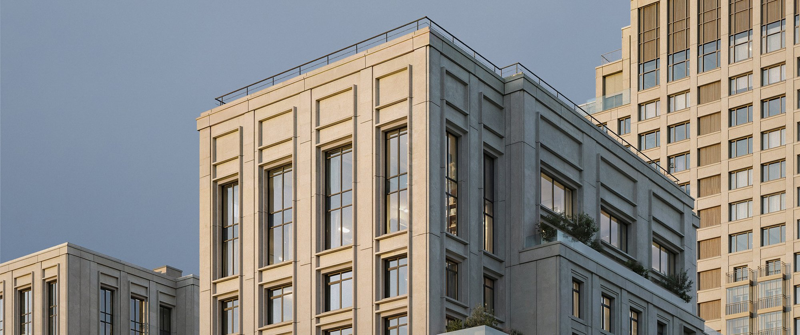
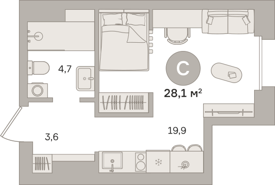
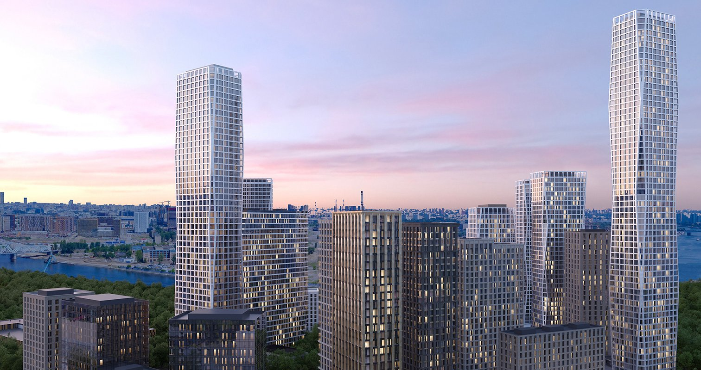
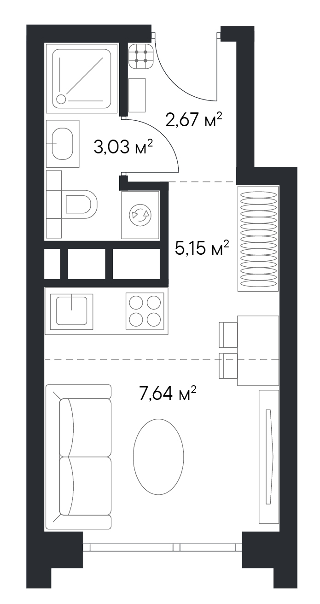
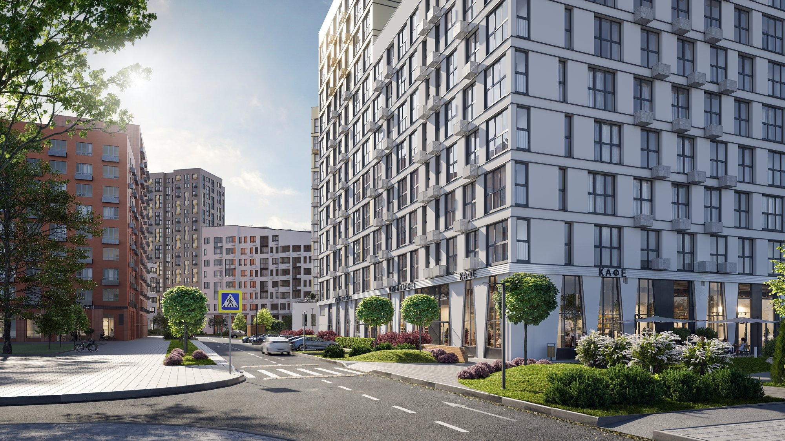
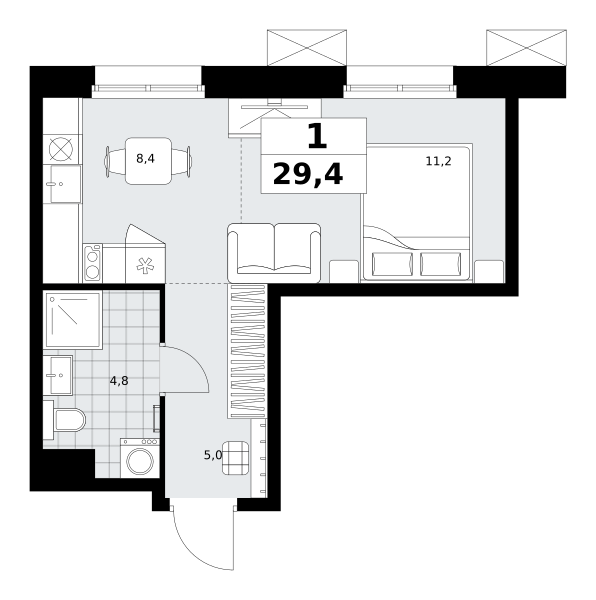

Спасибо, что написали «СТУДЕНТ» ❤️ Собрала здесь пять студий в разных районах Москвы: юго-запад, Сокол, север, юг и Новая Москва. У каждой фото, планировка и цена.
Цены сверила на сайтах застройщиков 25 октября 2026. У четырёх квартир скидки действуют до 31 октября, поэтому перед звонком я перепроверю цену под вас.
Вариант 1 · Юго-ЗападСтудия 24,9 м² у метро Академическая

1 мин
пешком до метро
24,9 м²
13 этаж из 19
сдан
дом готов
Метро Академическая в минуте от дома, Калужско-Рижская ветка: до РУДН четыре остановки (Беляево), до центра без пересадок.
Дом уже сдан, можно заезжать после ремонта. Квартира без отделки, ремонт под себя.
Юго-Запад всегда в спросе у студентов и арендаторов, такую студию легко сдать после выпуска.
23 017 382 ₽
цена при 100% оплате, скидка 35% до 31.10
цена без скидки: 35 411 357 ₽

Вариант 2 · Сокол и АэропортСтудия 28,6 м² у метро Войковская

11 мин
пешком до метро
28,6 м²
13 этаж из 26
3 кв. 2028
срок сдачи
Зелёная ветка: до Сокола (МАИ) одна остановка, до Аэропорта и Динамо (МАДИ) две-три, до центра без пересадок.
Отделка white box: стены и полы готовы под чистовую, ремонт выйдет быстрее и дешевле.
Пока дом строится, есть время спокойно подготовиться к переезду.
19 129 854 ₽
цена при 100% оплате, скидка 20% до 31.10
цена без скидки: 23 912 317 ₽

Вариант 3 · СеверСтудия 27,7 м² у метро Фонвизинская

3 мин
пешком до метро
27,7 м²
14 этаж из 24
3 кв. 2027
срок сдачи
Метро в трёх минутах, рядом МЦД, до центра по салатовой ветке без пересадок.
Закрытый двор-сад, коворкинги в доме: есть где учиться кроме своей квартиры.
Предчистовая отделка, ключи через год, как раз к следующему учебному году.
20 280 000 ₽
цена при 100% оплате, скидка 20% до 31.10
цена без скидки: 25 360 000 ₽

На планировке застройщика типовая площадь 28,1 м², у этой квартиры по сайту 27,7 м².
Вариант 4 · ЮгСтудия 18,2 м² у метро Нагатинская

3 мин
пешком до метро
18,2 м²
16 этаж из 25
сдан
дом готов
Метро в трёх минутах, серая ветка ведёт в центр без пересадок.
Дом сдан, предчистовая отделка: заезд после небольшого ремонта.
Самый доступный вход в готовый дом у метро из этой подборки.
18 575 267 ₽
цена со скидкой 10%, ещё 5% застройщик даёт за быстрый выход на сделку
цена без скидки: 20 639 186 ₽

Вариант 5 · Новая МоскваСтудия 29,4 м² у метро Новомосковская

до 5 мин
пешком до метро
29,4 м²
3 этаж из 8
2 кв. 2028
ключи
Две станции рядом, Новомосковская и Потапово. Красная ветка идёт прямо до Университета (МГУ) и в центр.
Квартира с отделкой: после ключей ремонт не нужен.
Самая большая студия из подборки по самой доступной цене за метр. Московская прописка.
16 242 912 ₽
цена при 100% оплате
базовая цена: 18 226 236 ₽

ДальшеВыберем вариант под вашего студента
Напишите мне, рядом с каким вузом нужно жить и на какой бюджет вы рассчитываете. Созвонимся, я покажу ещё варианты и расскажу, что в каждом районе важно знать до покупки.
Натали Логинова
Подбираю квартиры в Москве и Петербурге · @lng_estate